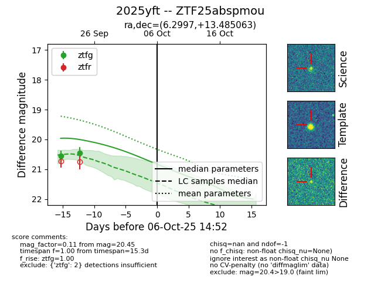
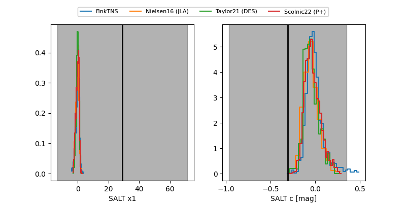

FINK: ZTF25abspmou
Lasair: ZTF25abspmou
ALeRCE: ZTF25abspmou
TNS: 2025yft
YSE: 2025yft
ZTF25abspmou (ztf,fink)
2025yft (tns,yse)
equatorial (ra, dec) = (6.2997,+13.48506)
galactic (l, b) = (113.2046,-48.89047)


last ztfg=20.45
2 ztfg detections